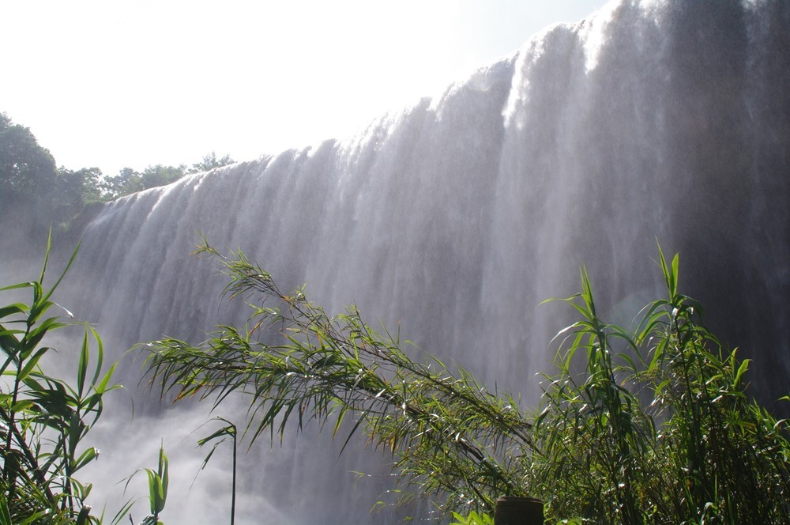
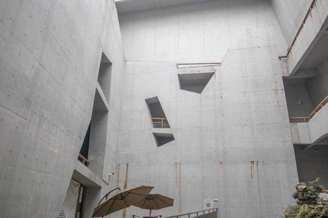
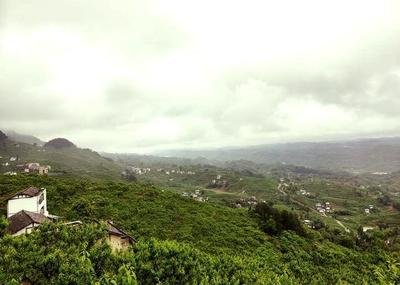

重庆市文明城区
万州区
东临云阳县，南接石柱土家族自治县和湖北利川市，西频忠县
梁平县、北界开县和四川开江县。万州区幅员面积3457平方公里
至2014年底，城市建成区面积62.5平方公里，城镇化率61.11%，
城镇人口突破百万大关。
万州区位独特，历为渝东北、川东、鄂西、陕南、黔东、湘西的
重要物资集散地，距重庆主城区和湖北宜昌200公里以上，是200公里
半径范围内城市人口唯一超过80万的中心城市。交通便利，长江黄金
水道穿境而过
|  | 万州大瀑布群景区宽151米，高64.5米，瀑布面积达9739.5平方米，是重庆市级风景名胜区。它位于万州区境内，距城区30公里，景区面积60.13平方公里。万州大瀑布群景区山青、水秀、瀑宽、洞奇、潭幽、湖大、虹美。瀑布下面1600平方米的水帘洞能极大丰富您的想象力。7000余平方米的青龙洞中，叹为观止的是自然天成的青龙洞“天工画壁” |
|  | 重庆三峡移民纪念馆是全国唯一为镌刻三峡工程及百万大移民这一重大历史事件，弘扬三峡移民精神，展现移民文化而建立的综合性纪念馆。重庆三峡移民纪念馆（ChongqingThreeGorgesimmigrationMemorial），位于重庆市万州区南滨路1561号，是纪念三峡百万大移民而修建的专题性纪念馆，三峡库区历史文化和移民文化收藏、保护研究和展示中心。重庆三峡移民纪念馆建设用地50亩，主体建筑面积15062平方米，展厅面积7000平方米，分为展览大厅、文物中心库房、学术报告厅 |
|  | 悦君山寨堡文化景区位于分水镇境内，总面积15万亩，其中森林面积6万亩，田垅果树经济林木9万余亩，主峰马鬃岭，海拔1373米，适宜四季游玩，尤其是夏季纳凉休闲和冬季赏雪观景的极佳地。景区历史遗迹丰富、文化积淀厚重，有栈道、碉楼寨堡等古遗迹和多个自然景点；建有狩猎场、休闲长廊、观光亭，集餐饮、娱乐、休闲、观光、住宿为一体 |